Kunskapscentrum / Sverige
Kommunismen
i Sverige.
Från Kominterns svenska sektion till dagens Ung Vänster – och den våldsbejakande vänsterextremism som Säpo följer i dag. Allt med källor.
Historien 1917–idag
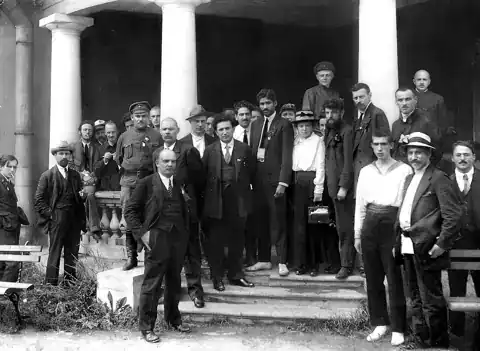
1917–1921
Ett parti i Moskvas tjänst
Vänsterpartiets föregångare bildades 1917 som Sveriges socialdemokratiska vänsterparti, anslöt sig 1919 till Kommunistiska internationalen (Komintern) och tog 1921 namnet Sveriges kommunistiska parti (SKP). Enligt Säkerhetstjänstkommissionen var Kominterns program från 1928 – att makten ”nödvändigtvis måste” tas med våld och att proletariatets diktatur skulle följa – också SKP:s program fram till 1943.
Källa: SOU 2002:87, kap. 6.1 · NE: Vänsterpartiet
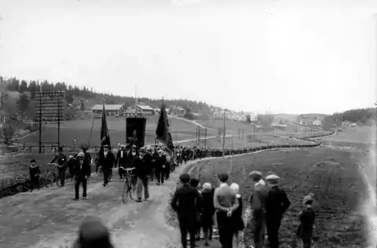
1931
Ådalen – i sitt sammanhang
Den 14 maj 1931 sköt militär mot ett demonstrationståg i Lunde i Ådalen; fem människor dödades. Händelsen var en tragedi och en skamfläck för staten. Den revolutionära tolkning som SKP drev efteråt användes för att värva anhängare – men det var den demokratiska arbetarrörelsen, inte kommunisterna, som vann folkets förtroende i valen som följde.
Källa: LO: Skotten i Ådalen 1931 · Kramfors kommun: Ådalen 31
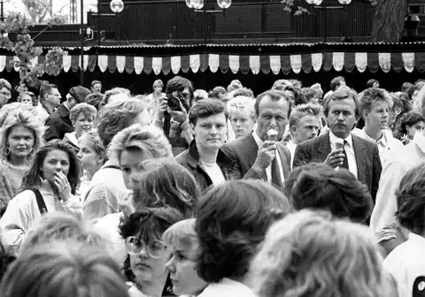
1936–1941
Wollweberligan – sabotage från Sverige
Ett sovjetiskt sabotagenätverk under den tyske kommunisten Ernst Wollweber använde dynamit stulen från svenska gruvor för att spränga fartyg. Historikern Wilhelm Agrell visar att SKP var nätverkets viktigaste sambandslänk. Säpo rullade upp ligan 1941 och elva personer dömdes.
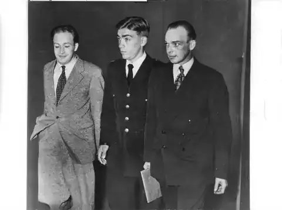
1945–1960-tal
Femtekolonnare i ett skymningsläge?
Säkerhetstjänsterna såg SKP som en möjlig femtekolonn vid ett krig med Sovjetunionen. Kommissionen konstaterar att ”kommunistiskt sinnade personer hade avslöjats som spioner för Sovjetunionens räkning” och att SKP hade täta kopplingar till kommunistdiktaturerna i Östeuropa och ”avvisade all kritik av sovjetsystemet”.
Källa: SOU 2002:87, sammanfattning
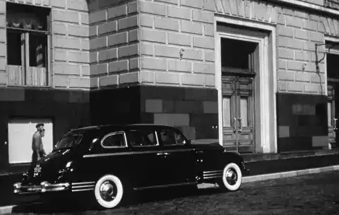
1949–1960-tal
Pengar från Moskva
Säkerhetstjänsterna hyste enligt kommissionen ”som det senare visat sig, välgrundade misstankar om att Sovjetunionen ekonomiskt bidrog till SKP:s och den kommunistiska partipressens finansiering”. Det motsvarar brottet tagande av utländskt understöd.
Källa: SOU 2002:87, sammanfattning
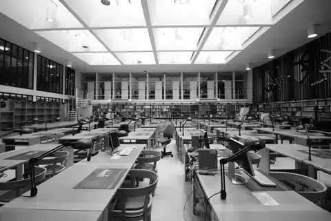
1948–1969
Registreringen
Efter Pragkuppen 1948 registrerade säkerhetspolisen kommunister i stor skala: enligt kommissionen fler än 100 000 personer, ”stundom på lösa grunder”. Det säger något om både hotet och om att rättsstaten måste gälla alla – också i kampen mot kommunismen.
Källa: SOU 2002:87, sammanfattning
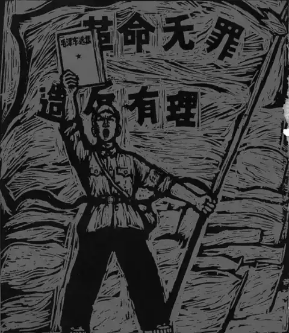
1967
VPK och maoisterna
1967 bytte SKP namn till Vänsterpartiet kommunisterna (VPK). Samma år bröt sig den Kinavänliga falangen ut och bildade KFML, senare SKP. Enligt kommissionen misstänktes KFML/SKP få ekonomiskt stöd från Kina, och flera av de vänsterrevolutionära grupperna hade kontakter med utländska terroriströrelser.
Källa: SOU 2002:87, sammanfattning

1978
Hyllningarna av Pol Pot
Medan Röda khmererna mördade en fjärdedel av Kambodjas folk reste en delegation från Svensk-kampucheanska vänskapsförbundet runt i landet som Pol Pots gäster och berättade sedan om ett land på väg mot socialismen. Gunnar Bergström har senare bett om ursäkt.
Källa: IPS 2008

1981
U 137 – Sovjet i svenska vatten
Den 27 oktober 1981 gick en sovjetisk ubåt på grund i Gåsefjärden, inne i ett militärt skyddsområde utanför Karlskrona.
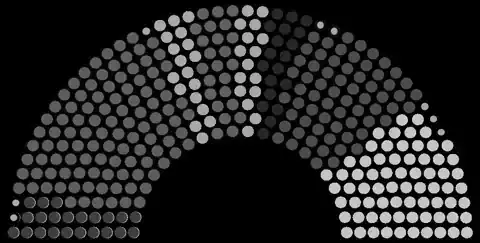
1990
Ordet försvinner – partiet blir kvar
Efter Berlinmurens fall strök VPK 1990 ordet ”kommunisterna” och blev Vänsterpartiet. Partiet är samma organisation, med samma historia sedan 1917.
Källa: NE: Vänsterpartiet

2021
Ung Vänster i dag
Vänsterpartiets ungdomsförbund skriver i sitt principprogram: ”Vårt mål är ett klasslöst samhälle, fritt från förtryck – ett kommunistiskt samhälle.”
I dag och historiskt
Våldsbejakande vänsterextremism
Våld i politikens namn är oacceptabelt – oavsett från vilket håll det kommer. Här beskriver vi vänsterextremismen så som myndigheterna själva gör. Vi namnger inga enskilda personer.
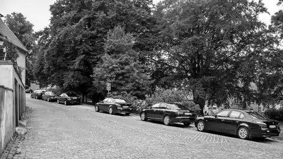
Definitionen
Säkerhetspolisen följer tre våldsbejakande extremistmiljöer i Sverige: den islamistiska, den högerextrema och den vänsterextrema. Gemensamt är att de ”ser brott som en legitim del av kampen för en annan samhällsordning”.
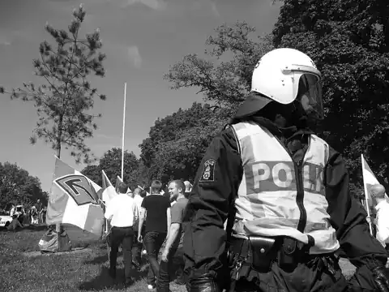
Den autonoma miljön
Brå och Säpo beskrev 2009 den autonoma miljön – i dag kallad den våldsbejakande vänsterextrema miljön – med ”det klasslösa samhället som vision”, där våld och andra brott ”accepteras som ett led i den politiska kampen”.
Källa: Brå 2009:15
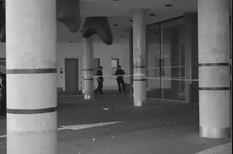
AFA
Enligt Brå 2009:15 är Afa:s övergripande målsättning ”att genom revolution avskaffa den rådande samhällsordningen och staten”, och begreppet antifascism tolkas så brett att det omfattar kamp även mot myndigheter, förtroendevalda och företag.
Källa: Brå 2009:15, s. 45
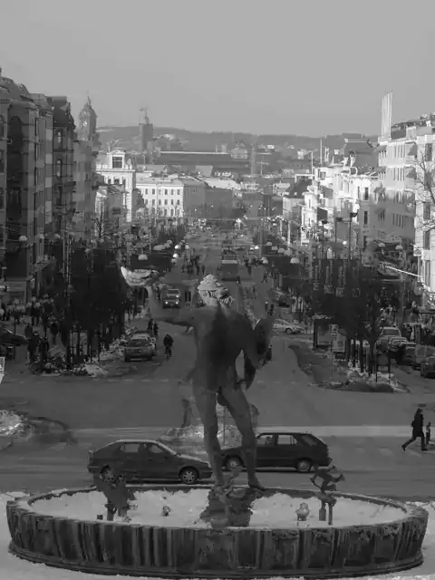
Revolutionära fronten
Revolutionära fronten bildades ur Afa efter EU-toppmötet i Göteborg 2001 och var enligt CVE aktiv fram till 2015. Målet var att genom revolution avskaffa samhällsordningen.
Källa: Brå 2009:15 · CVE: Den autonoma miljön
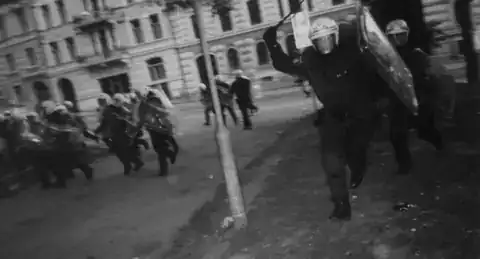
Göteborg 2001
Kravallerna vid EU-toppmötet i Göteborg i juni 2001 beskrivs av Brå som en vändpunkt: före kravallerna hade den autonoma miljön ett relativt starkt stöd inom en bred vänster; efter nya avslöjanden om våld och kriminalitet blev grupperna mer isolerade.
Källa: Brå 2009:15
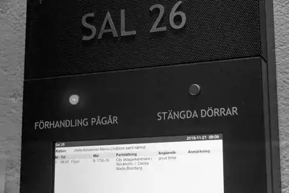
Domarna
Enligt CVE dömdes en person från miljön till ett längre fängelsestraff för försök till dråp efter Kärrtorp 2013, och 13 personer med kopplingar till miljön dömdes för våldsamt upplopp efter Kungsträdgården 2015.
Källa: CVE: Den autonoma miljön
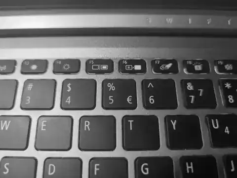
Kartläggning av motståndare
CVE beskriver hur miljön sedan tidigt 1990-tal kartlägger meningsmotståndare och publicerar hemadresser, foton och personnummer – med både lagliga och olagliga metoder, ”alltifrån bevakning av rättegångar till dataintrång”.
Källa: CVE: Den autonoma miljön
Nej till kommunismen.
Vi är unga som säger nej – med fakta, inte våld.
Bli medlem – gratis